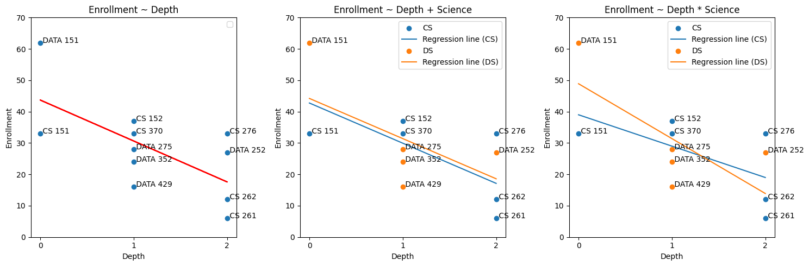
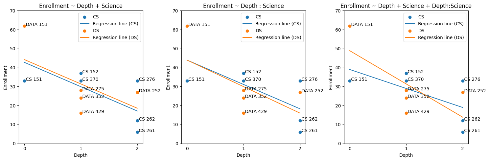
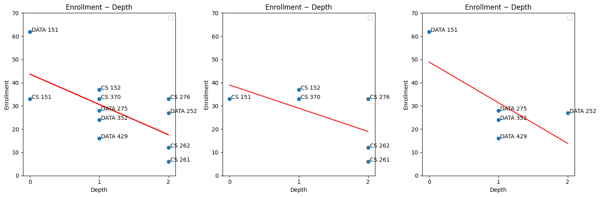

# I don't have a scrapper so this is from a .csv on my HDD :|
csv = """
0,33,CS, CS 151
1,37,CS, CS 152
1,33,CS, CS 370
2,06,CS, CS 261
2,12,CS, CS 262
2,33,CS, CS 276
0,62,DS, DATA 151
1,28,DS, DATA 275
1,24,DS, DATA 352
1,16,DS, DATA 429
2,27,DS, DATA 252
"""import pandas as pd
import statsmodels.formula.api as smf
import matplotlib.pyplot as pltarr = [line.split(',') for line in csv.split('\n') if line]df = pd.DataFrame(arr, columns=["Depth", "Enrollment", "Science", "Name"])
df["Depth"] = df["Depth"].astype(int)
df["Enrollment"] = df["Enrollment"].astype(int)
df| Depth | Enrollment | Science | Name | |
|---|---|---|---|---|
| 0 | 0 | 33 | CS | CS 151 |
| 1 | 1 | 37 | CS | CS 152 |
| 2 | 1 | 33 | CS | CS 370 |
| 3 | 2 | 6 | CS | CS 261 |
| 4 | 2 | 12 | CS | CS 262 |
| 5 | 2 | 33 | CS | CS 276 |
| 6 | 0 | 62 | DS | DATA 151 |
| 7 | 1 | 28 | DS | DATA 275 |
| 8 | 1 | 24 | DS | DATA 352 |
| 9 | 1 | 16 | DS | DATA 429 |
| 10 | 2 | 27 | DS | DATA 252 |
# prompt: plot
# enrollment ~ depth
# enrollment ~ depth + science
# enrollment ~ depth * science
# Label points with "name"
# Color regression lines by "science"
formulas = ["Enrollment ~ Depth", "Enrollment ~ Depth + Science", "Enrollment ~ Depth * Science"]
def three_formulas(dfs, formulas):
plt.figure(figsize=(15, 5))
for i, formula in enumerate(formulas):
plt.subplot(1, 3, i + 1)
df = dfs[i]
model = smf.ols(formula, data=dfs[i]).fit()
if " " in formula.split("~ ")[1]:
for science, group in df.groupby("Science"):
plt.scatter(group["Depth"], group["Enrollment"], label=science)
# Predict values for the current science group
group_predictions = model.predict(group)
plt.plot(group["Depth"], group_predictions, label=f"Regression line ({science})")
else:
plt.scatter(df["Depth"], df["Enrollment"])
plt.plot(df["Depth"], model.predict(df), color="red")
# Annotate points with 'Name'
for index, row in df.iterrows():
plt.annotate(row['Name'], (row['Depth'], row['Enrollment']))
plt.title(formulas[i])
plt.xlabel("Depth")
plt.xticks(range(3))
plt.yticks(range(0,80,10))
plt.ylabel("Enrollment")
plt.legend()
print(model.summary())
plt.tight_layout()
plt.show()
three_formulas([df,df,df], formulas)UserWarning: No artists with labels found to put in legend. Note that artists whose label start with an underscore are ignored when legend() is called with no argument.
plt.legend()
/usr/local/lib/python3.10/dist-packages/scipy/stats/_axis_nan_policy.py:531: UserWarning: kurtosistest only valid for n>=20 ... continuing anyway, n=11
res = hypotest_fun_out(*samples, **kwds)
/usr/local/lib/python3.10/dist-packages/scipy/stats/_axis_nan_policy.py:531: UserWarning: kurtosistest only valid for n>=20 ... continuing anyway, n=11
res = hypotest_fun_out(*samples, **kwds) OLS Regression Results
==============================================================================
Dep. Variable: Enrollment R-squared: 0.434
Model: OLS Adj. R-squared: 0.371
Method: Least Squares F-statistic: 6.896
Date: Mon, 13 Jan 2025 Prob (F-statistic): 0.0275
Time: 19:40:32 Log-Likelihood: -41.651
No. Observations: 11 AIC: 87.30
Df Residuals: 9 BIC: 88.10
Df Model: 1
Covariance Type: nonrobust
==============================================================================
coef std err t P>|t| [0.025 0.975]
------------------------------------------------------------------------------
Intercept 43.6935 6.866 6.364 0.000 28.162 59.225
Depth -13.0484 4.969 -2.626 0.028 -24.289 -1.808
==============================================================================
Omnibus: 1.375 Durbin-Watson: 1.664
Prob(Omnibus): 0.503 Jarque-Bera (JB): 0.854
Skew: 0.335 Prob(JB): 0.652
Kurtosis: 1.811 Cond. No. 3.80
==============================================================================
Notes:
[1] Standard Errors assume that the covariance matrix of the errors is correctly specified.
OLS Regression Results
==============================================================================
Dep. Variable: Enrollment R-squared: 0.436
Model: OLS Adj. R-squared: 0.295
Method: Least Squares F-statistic: 3.096
Date: Mon, 13 Jan 2025 Prob (F-statistic): 0.101
Time: 19:40:32 Log-Likelihood: -41.627
No. Observations: 11 AIC: 89.25
Df Residuals: 8 BIC: 90.45
Df Model: 2
Covariance Type: nonrobust
=================================================================================
coef std err t P>|t| [0.025 0.975]
---------------------------------------------------------------------------------
Intercept 42.7500 8.828 4.842 0.001 22.392 63.108
Science[T.DS] 1.4625 7.772 0.188 0.855 -16.459 19.384
Depth -12.8125 5.406 -2.370 0.045 -25.279 -0.346
==============================================================================
Omnibus: 1.324 Durbin-Watson: 1.665
Prob(Omnibus): 0.516 Jarque-Bera (JB): 0.823
Skew: 0.307 Prob(JB): 0.663
Kurtosis: 1.808 Cond. No. 5.02
==============================================================================
Notes:
[1] Standard Errors assume that the covariance matrix of the errors is correctly specified./usr/local/lib/python3.10/dist-packages/scipy/stats/_axis_nan_policy.py:531: UserWarning: kurtosistest only valid for n>=20 ... continuing anyway, n=11
res = hypotest_fun_out(*samples, **kwds) OLS Regression Results
==============================================================================
Dep. Variable: Enrollment R-squared: 0.468
Model: OLS Adj. R-squared: 0.240
Method: Least Squares F-statistic: 2.053
Date: Mon, 13 Jan 2025 Prob (F-statistic): 0.195
Time: 19:40:32 Log-Likelihood: -41.307
No. Observations: 11 AIC: 90.61
Df Residuals: 7 BIC: 92.21
Df Model: 3
Covariance Type: nonrobust
=======================================================================================
coef std err t P>|t| [0.025 0.975]
---------------------------------------------------------------------------------------
Intercept 39.0000 10.848 3.595 0.009 13.350 64.650
Science[T.DS] 9.9000 15.341 0.645 0.539 -26.375 46.175
Depth -10.0000 7.101 -1.408 0.202 -26.792 6.792
Depth:Science[T.DS] -7.5000 11.597 -0.647 0.538 -34.921 19.921
==============================================================================
Omnibus: 2.873 Durbin-Watson: 1.821
Prob(Omnibus): 0.238 Jarque-Bera (JB): 0.994
Skew: 0.079 Prob(JB): 0.608
Kurtosis: 1.536 Cond. No. 9.53
==============================================================================
Notes:
[1] Standard Errors assume that the covariance matrix of the errors is correctly specified.
formulas = ["Enrollment ~ Depth + Science", "Enrollment ~ Depth : Science", "Enrollment ~ Depth + Science + Depth:Science"]
three_formulas([df,df,df], formulas)/usr/local/lib/python3.10/dist-packages/scipy/stats/_axis_nan_policy.py:531: UserWarning: kurtosistest only valid for n>=20 ... continuing anyway, n=11
res = hypotest_fun_out(*samples, **kwds)
/usr/local/lib/python3.10/dist-packages/scipy/stats/_axis_nan_policy.py:531: UserWarning: kurtosistest only valid for n>=20 ... continuing anyway, n=11
res = hypotest_fun_out(*samples, **kwds) OLS Regression Results
==============================================================================
Dep. Variable: Enrollment R-squared: 0.436
Model: OLS Adj. R-squared: 0.295
Method: Least Squares F-statistic: 3.096
Date: Mon, 13 Jan 2025 Prob (F-statistic): 0.101
Time: 19:40:34 Log-Likelihood: -41.627
No. Observations: 11 AIC: 89.25
Df Residuals: 8 BIC: 90.45
Df Model: 2
Covariance Type: nonrobust
=================================================================================
coef std err t P>|t| [0.025 0.975]
---------------------------------------------------------------------------------
Intercept 42.7500 8.828 4.842 0.001 22.392 63.108
Science[T.DS] 1.4625 7.772 0.188 0.855 -16.459 19.384
Depth -12.8125 5.406 -2.370 0.045 -25.279 -0.346
==============================================================================
Omnibus: 1.324 Durbin-Watson: 1.665
Prob(Omnibus): 0.516 Jarque-Bera (JB): 0.823
Skew: 0.307 Prob(JB): 0.663
Kurtosis: 1.808 Cond. No. 5.02
==============================================================================
Notes:
[1] Standard Errors assume that the covariance matrix of the errors is correctly specified.
OLS Regression Results
==============================================================================
Dep. Variable: Enrollment R-squared: 0.436
Model: OLS Adj. R-squared: 0.296
Method: Least Squares F-statistic: 3.098
Date: Mon, 13 Jan 2025 Prob (F-statistic): 0.101
Time: 19:40:34 Log-Likelihood: -41.625
No. Observations: 11 AIC: 89.25
Df Residuals: 8 BIC: 90.44
Df Model: 2
Covariance Type: nonrobust
=====================================================================================
coef std err t P>|t| [0.025 0.975]
-------------------------------------------------------------------------------------
Intercept 43.9500 7.385 5.951 0.000 26.919 60.981
Depth:Science[CS] -12.8286 5.380 -2.385 0.044 -25.234 -0.423
Depth:Science[DS] -13.9643 7.077 -1.973 0.084 -30.285 2.356
==============================================================================
Omnibus: 1.642 Durbin-Watson: 1.679
Prob(Omnibus): 0.440 Jarque-Bera (JB): 0.903
Skew: 0.318 Prob(JB): 0.637
Kurtosis: 1.748 Cond. No. 3.87
==============================================================================
Notes:
[1] Standard Errors assume that the covariance matrix of the errors is correctly specified./usr/local/lib/python3.10/dist-packages/scipy/stats/_axis_nan_policy.py:531: UserWarning: kurtosistest only valid for n>=20 ... continuing anyway, n=11
res = hypotest_fun_out(*samples, **kwds) OLS Regression Results
==============================================================================
Dep. Variable: Enrollment R-squared: 0.468
Model: OLS Adj. R-squared: 0.240
Method: Least Squares F-statistic: 2.053
Date: Mon, 13 Jan 2025 Prob (F-statistic): 0.195
Time: 19:40:34 Log-Likelihood: -41.307
No. Observations: 11 AIC: 90.61
Df Residuals: 7 BIC: 92.21
Df Model: 3
Covariance Type: nonrobust
=======================================================================================
coef std err t P>|t| [0.025 0.975]
---------------------------------------------------------------------------------------
Intercept 39.0000 10.848 3.595 0.009 13.350 64.650
Science[T.DS] 9.9000 15.341 0.645 0.539 -26.375 46.175
Depth -10.0000 7.101 -1.408 0.202 -26.792 6.792
Depth:Science[T.DS] -7.5000 11.597 -0.647 0.538 -34.921 19.921
==============================================================================
Omnibus: 2.873 Durbin-Watson: 1.821
Prob(Omnibus): 0.238 Jarque-Bera (JB): 0.994
Skew: 0.079 Prob(JB): 0.608
Kurtosis: 1.536 Cond. No. 9.53
==============================================================================
Notes:
[1] Standard Errors assume that the covariance matrix of the errors is correctly specified.
formulas = ["Enrollment ~ Depth", "Enrollment ~ Depth", "Enrollment ~ Depth"]
cs = df[df["Science"] == "CS"]
ds = df[df["Science"] == "DS"]
three_formulas([df, cs, ds], formulas)UserWarning: No artists with labels found to put in legend. Note that artists whose label start with an underscore are ignored when legend() is called with no argument.
plt.legend()
/usr/local/lib/python3.10/dist-packages/scipy/stats/_axis_nan_policy.py:531: UserWarning: kurtosistest only valid for n>=20 ... continuing anyway, n=11
res = hypotest_fun_out(*samples, **kwds)
<ipython-input-5-771ecdb43ee0>:36: UserWarning: No artists with labels found to put in legend. Note that artists whose label start with an underscore are ignored when legend() is called with no argument.
plt.legend()
/usr/local/lib/python3.10/dist-packages/statsmodels/stats/stattools.py:74: ValueWarning: omni_normtest is not valid with less than 8 observations; 6 samples were given.
warn("omni_normtest is not valid with less than 8 observations; %i "
<ipython-input-5-771ecdb43ee0>:36: UserWarning: No artists with labels found to put in legend. Note that artists whose label start with an underscore are ignored when legend() is called with no argument.
plt.legend()
/usr/local/lib/python3.10/dist-packages/statsmodels/stats/stattools.py:74: ValueWarning: omni_normtest is not valid with less than 8 observations; 5 samples were given.
warn("omni_normtest is not valid with less than 8 observations; %i " OLS Regression Results
==============================================================================
Dep. Variable: Enrollment R-squared: 0.434
Model: OLS Adj. R-squared: 0.371
Method: Least Squares F-statistic: 6.896
Date: Mon, 13 Jan 2025 Prob (F-statistic): 0.0275
Time: 19:40:35 Log-Likelihood: -41.651
No. Observations: 11 AIC: 87.30
Df Residuals: 9 BIC: 88.10
Df Model: 1
Covariance Type: nonrobust
==============================================================================
coef std err t P>|t| [0.025 0.975]
------------------------------------------------------------------------------
Intercept 43.6935 6.866 6.364 0.000 28.162 59.225
Depth -13.0484 4.969 -2.626 0.028 -24.289 -1.808
==============================================================================
Omnibus: 1.375 Durbin-Watson: 1.664
Prob(Omnibus): 0.503 Jarque-Bera (JB): 0.854
Skew: 0.335 Prob(JB): 0.652
Kurtosis: 1.811 Cond. No. 3.80
==============================================================================
Notes:
[1] Standard Errors assume that the covariance matrix of the errors is correctly specified.
OLS Regression Results
==============================================================================
Dep. Variable: Enrollment R-squared: 0.386
Model: OLS Adj. R-squared: 0.233
Method: Least Squares F-statistic: 2.516
Date: Mon, 13 Jan 2025 Prob (F-statistic): 0.188
Time: 19:40:36 Log-Likelihood: -21.957
No. Observations: 6 AIC: 47.91
Df Residuals: 4 BIC: 47.50
Df Model: 1
Covariance Type: nonrobust
==============================================================================
coef std err t P>|t| [0.025 0.975]
------------------------------------------------------------------------------
Intercept 39.0000 9.631 4.050 0.015 12.261 65.739
Depth -10.0000 6.305 -1.586 0.188 -27.505 7.505
==============================================================================
Omnibus: nan Durbin-Watson: 1.845
Prob(Omnibus): nan Jarque-Bera (JB): 0.501
Skew: 0.113 Prob(JB): 0.778
Kurtosis: 1.603 Cond. No. 4.24
==============================================================================
Notes:
[1] Standard Errors assume that the covariance matrix of the errors is correctly specified.
OLS Regression Results
==============================================================================
Dep. Variable: Enrollment R-squared: 0.486
Model: OLS Adj. R-squared: 0.315
Method: Least Squares F-statistic: 2.841
Date: Mon, 13 Jan 2025 Prob (F-statistic): 0.190
Time: 19:40:36 Log-Likelihood: -19.251
No. Observations: 5 AIC: 42.50
Df Residuals: 3 BIC: 41.72
Df Model: 1
Covariance Type: nonrobust
==============================================================================
coef std err t P>|t| [0.025 0.975]
------------------------------------------------------------------------------
Intercept 48.9000 12.284 3.981 0.028 9.807 87.993
Depth -17.5000 10.382 -1.686 0.190 -50.540 15.540
==============================================================================
Omnibus: nan Durbin-Watson: 1.801
Prob(Omnibus): nan Jarque-Bera (JB): 0.526
Skew: 0.054 Prob(JB): 0.769
Kurtosis: 1.414 Cond. No. 3.51
==============================================================================
Notes:
[1] Standard Errors assume that the covariance matrix of the errors is correctly specified.